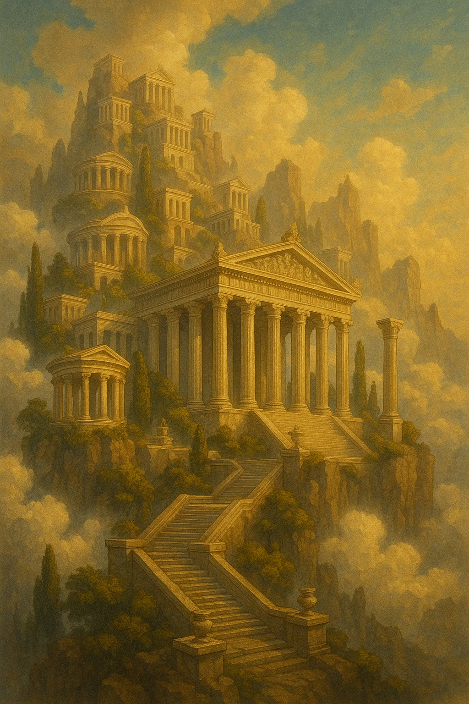

Світи Війни

Олімп
Плавуча гора, прихована від очей смертних хмарами. Це місце інтриг, величі та незбагненної сили. Архітектура Олімпу кидає виклик законам фізики.
Цікаві факти:
- Ріки тут течуть нектаром, що відновлює сили богів.
- Погода на Олімпі залежить від настрою Зевса.
- Саме тут знаходиться Кузня Гефеста, де створюється легендарна зброя.

Ніл
Долина великої ріки, де час тече інакше. Тут магія просочує кожен камінь, а піраміди слугують не гробницями, а джерелами енергії та порталами в потойбічний світ Дуат.
Цікаві факти:
- Води Нілу можуть як зцілити, так і проклясти.
- Раз на століття Ра проводить свій човен через пустелю, випалюючи зло.
- В оазах можна знайти сфінксів, що говорять загадками і дарують силу.

Вальхала
Величезний чертог у Асгарді, де Одін збирає душі найхоробріших воїнів, ейнхеріїв. Це місце вічних бенкетів та тренувань в очікуванні Рагнарьоку.
Цікаві факти:
- Щодня воїни б'ються на смерть, а ввечері воскресають для бенкету.
- Дах Вальхали зроблений із позолочених щитів.
- Міст Біфрост, що веде до Асгарду, є стратегічно важливою точкою.